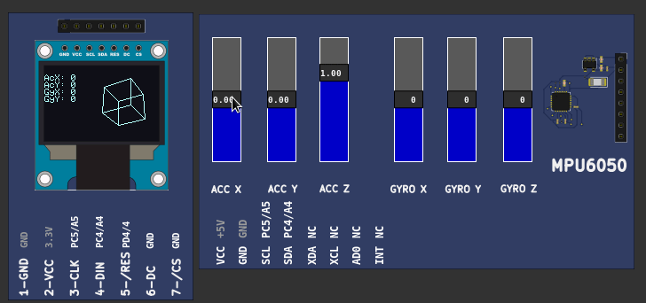
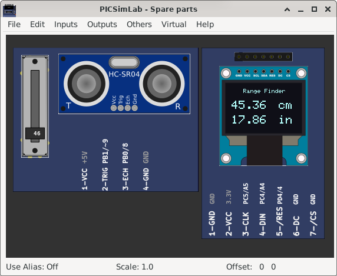
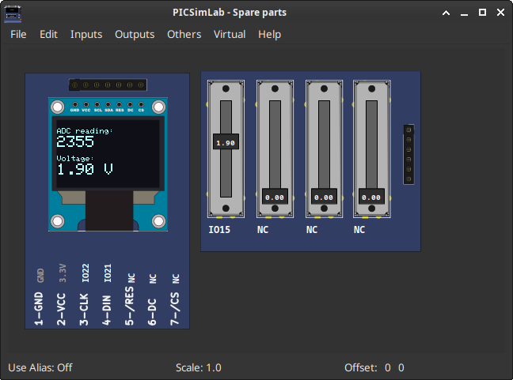

[Arduino_Uno/atmega328p/3Dcube] MPU6050 and 3D cubeTime to rotate a virtual cube on a 0.96″ OLED Display! In this tutorial, I’ll be using the MPU6050 to get the acceleration values of the X-axis and the Y-Axis, which would then be translated to the speed at which the cube is rotating at. I’ll not be using the values of the gyroscope this time but I may used it in the future. Tutorial MPU6050 and 3D cube | |
|  | Download (pzw) |
[Arduino_Uno/atmega328p/lcd_ssd1306_i2c] library lcdgfx example: ssd1306_demo/** * Attiny85 PINS (i2c) * ____ * RESET -|_| |- 3V * SCL (3) -| |- (2) * SDA (4) -| |- (1) * GND -|____|- (0) * * Attiny SPI PINS: connect LCD to D4 (D/C), GND (CS), D3 (RES), D1(DIN), D2(CLK) * * Nano/Atmega328 PINS: connect LCD to A4/A5 (i2c) * ESP8266: GPIO4(SDA) / GPIO5( SCL ) * STM32: B7(SDA), B6(SCL) */ssd1306_demo.ino | |
 |
Download (pzw) |
[Arduino_Uno/atmega328p/lcd_ssd1306] library lcdgfx example: ssd1306_demo/** * Attiny85 PINS (i2c) * ____ * RESET -|_| |- 3V * SCL (3) -| |- (2) * SDA (4) -| |- (1) * GND -|____|- (0) * * Attiny SPI PINS: connect LCD to D4 (D/C), GND (CS), D3 (RES), D1(DIN), D2(CLK) * * Nano/Atmega328 PINS: connect LCD to A4/A5 (i2c) * ESP8266: GPIO4(SDA) / GPIO5( SCL ) * STM32: B7(SDA), B6(SCL) */ssd1306_demo.ino | |
 |
Download (pzw)
View Online |
[Arduino_Uno/atmega328p/ultrasonic] Ultrasonic range finderhttps://how2electronics.com/arduino-ultrasonic-range-finder-hc-sr04-oled-display/ultrasonic.ino | |
|  | Download (pzw) |
[ESP32_DevKitC/ESP32/AdcMeasuring] ESP32 ADC with Arduino IDEMeasuring voltage example Source code | |
|  | Download (pzw) |